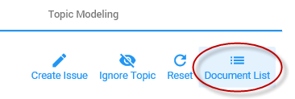

Open the Topic Modeling tab and select a topic.

To view the documents in this topic, select Document List.

Create an issue for topics that are identified as responsive.

Define the issue name, add a description for the issue and enter the batch size (size of the initial training set):